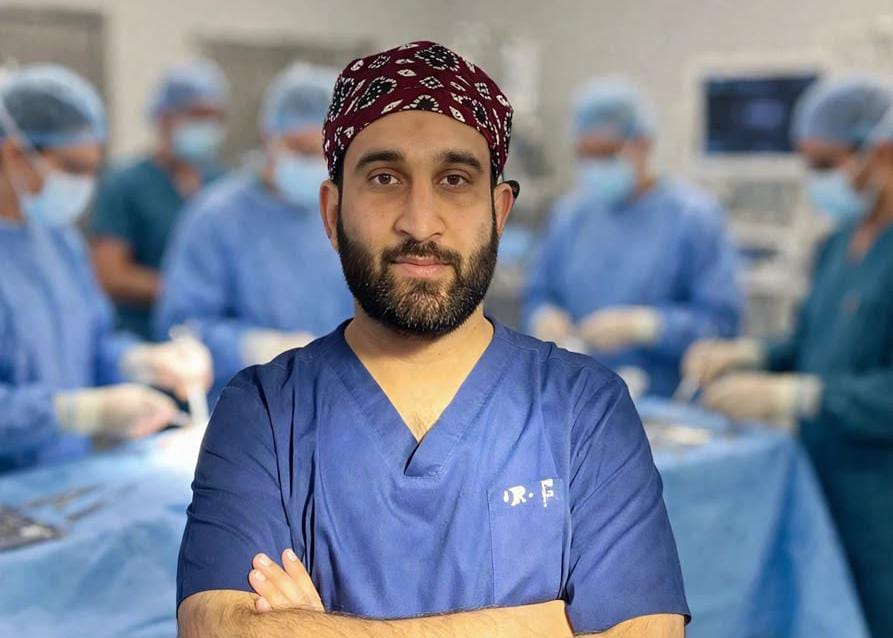

Urology care, with a personal touch.
Dr. Muhammad Fayyaz FCPS Urology (SIUT Karachi)
Thoughtful consultations for adults and children, with clear guidance shaped around your individual needs.

FCPS Urology (SIUT Karachi)
Dr. Fayyaz provides consultations in adult and paediatric urology. Bring your questions and relevant reports to discuss your concern and the next steps that may be appropriate for you.
Explore all areas of careExplore consultation and procedure topics. Care recommendations depend on individual clinical assessment.
گردے اور گردے کی پتھری
Assessment and discussion of kidney and ureteric stones.
Learn moreمثانے کی دیکھ بھال
Review of changes in urinary habits and bladder symptoms.
Learn moreپروسٹیٹ کی دیکھ بھال
Evaluation of prostate-related urinary changes.
Learn moreمردانہ جنسی صحت
Private consultation about men's sexual health concerns.
Learn moreروبوٹک یورولوجیکل سرجری
Discussion of robot-assisted surgery and suitability.
Learn moreاینڈوسکوپک یورولوجیکل سرجری
Information about endoscopic urinary tract procedures.
Learn moreبچوں کے یورولوجی مسائل
Urological consultations for children and their families.
Learn moreباز تعمیری یورولوجی
Assessment of selected urinary tract structural concerns.
Learn moreپینائل امپلانٹ کے طریقۂ کار
A surgical option discussed for selected patients.
Learn moreیورو آنکولوجی
Assessment and planning for urological cancer concerns.
Learn moreپی سی این ایل، گردے کی پتھری کا طریقۂ علاج
A kidney-stone procedure considered in selected cases.
Learn moreEvery care plan begins with the individual patient—not an assumed diagnosis or a promised outcome.
Time to discuss symptoms, health history, examination findings, and relevant reports.
Understand which tests or treatment options may be appropriate, and why.
Discuss alternatives, possible risks, aftercare, and follow-up for your situation.
Appointment times are listed below. Please call the clinic to confirm availability before travelling.
اقراء میڈیکل کمپلیکس — یونٹ ون
6:00 PM to 9:00 PM
فاروق ہسپتال — ڈی ایچ اے
3:00 PM to 5:00 PM
فاروق ہسپتال — علامہ اقبال ٹاؤن
3:00 PM to 5:00 PM
Appointment contact: 0312-4165202
Choose your preferred clinic and date. The clinic team will contact you to discuss availability; requests are not confirmed appointments.